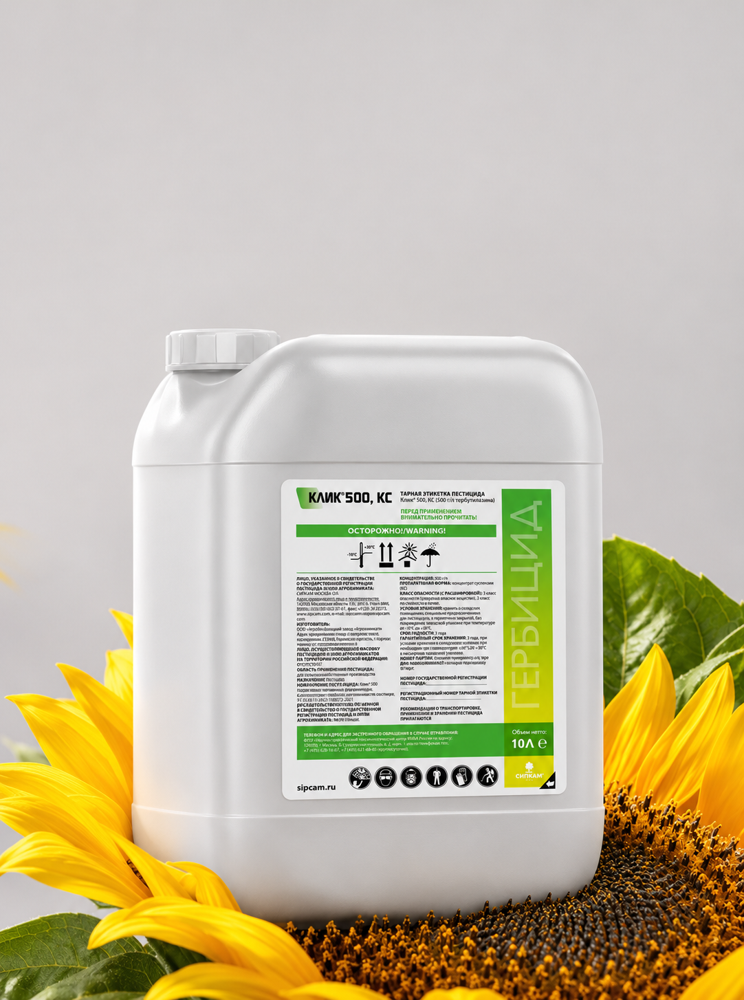
Клик® 500
«КЛИКни — к чистоте полей привыкни!» Единственный тербутилазин в чистом виде на рынке
СИПКАМ ОКСОН — независимая итальянская компания. С 1946 года создаём инновационные решения для защиты культур и поддерживаем фермеров по всему миру.
Наши препаратыСИПКАМ ОКСОН — три поколения семьи Гальярдини и итальянское качество. Сегодня компанию возглавляет внучка основателя Надия Гальярдини. Принцип «от молекулы до поля» объединяет весь цикл: от создания действующего вещества до применения препарата.
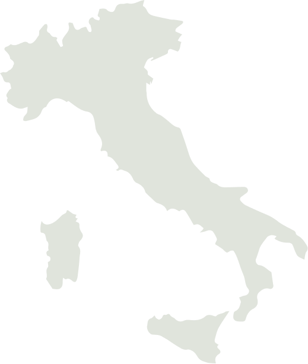
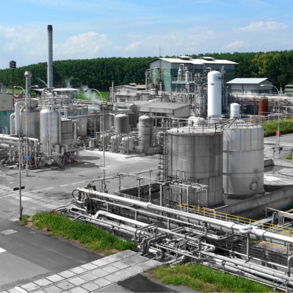
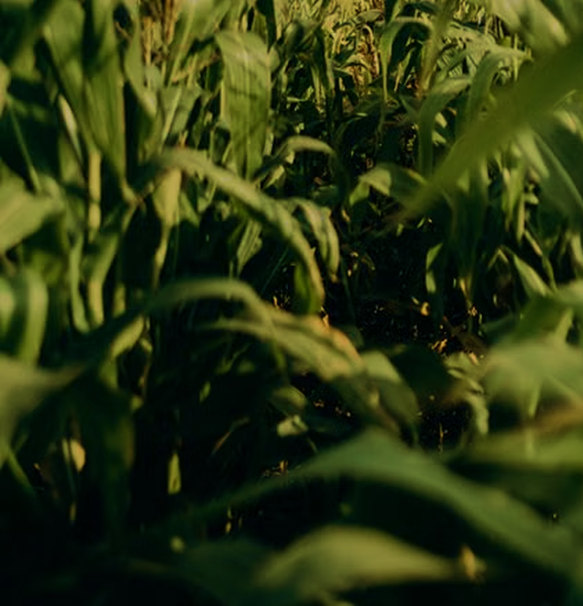
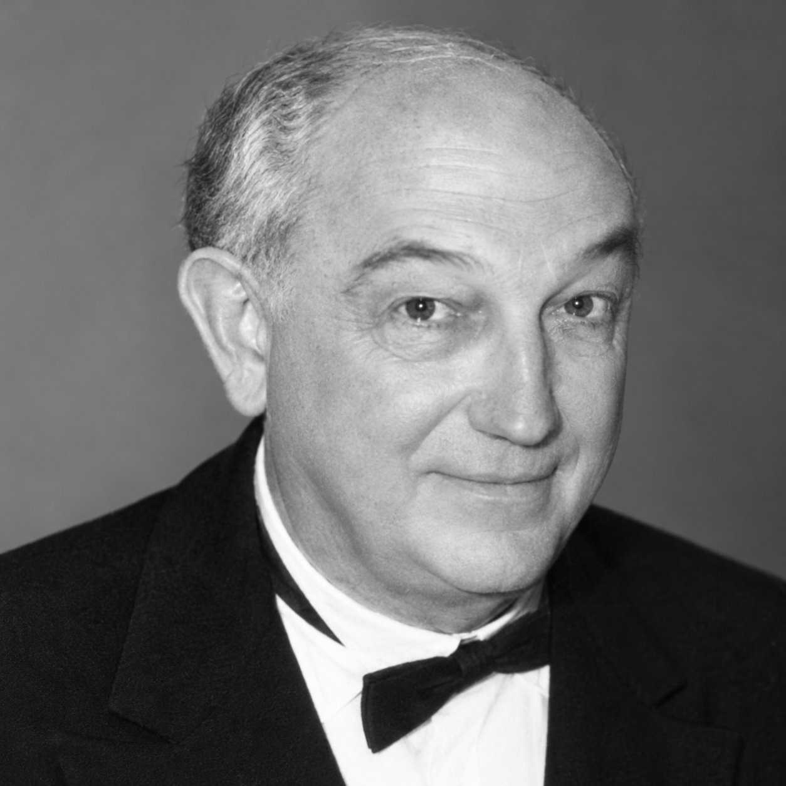
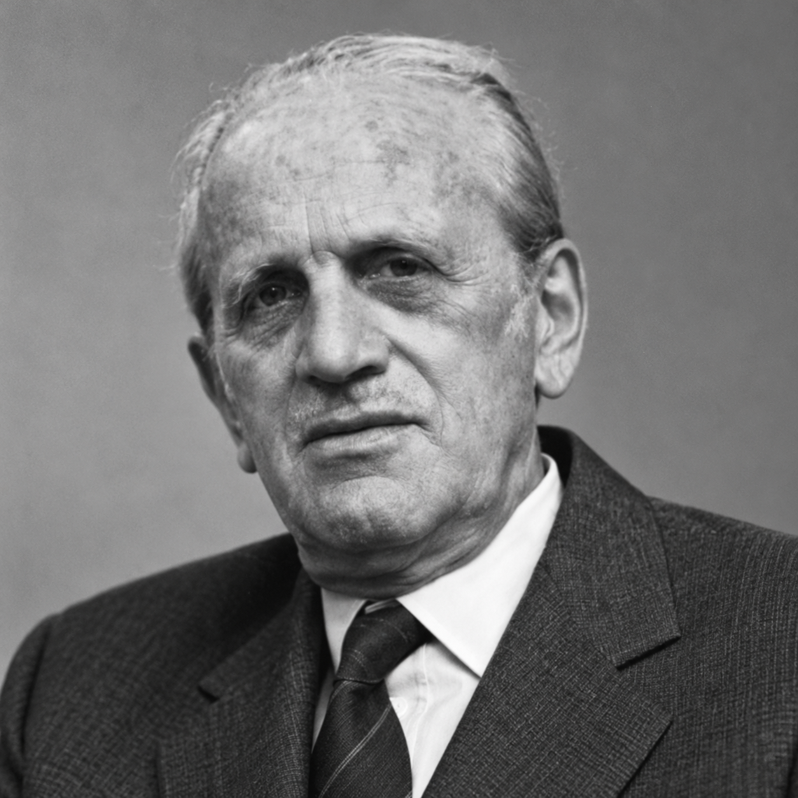
«В Sipcam Oxon мы культивируем такие ценности, как свобода, целеустремлённость, дисциплина и инновации на всех этапах нашей деятельности»
Уникальные решения для защиты сельскохозяйственных культур, создаваемые
«от молекулы до поля»

«КЛИКни — к чистоте полей привыкни!» Единственный тербутилазин в чистом виде на рынке
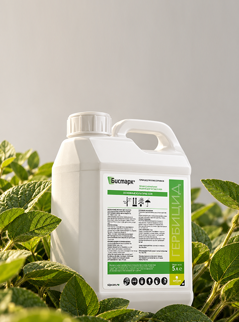
Убойная комбинация на защите картофеля и рапса! Два механизма действия в одной микрокапсуле
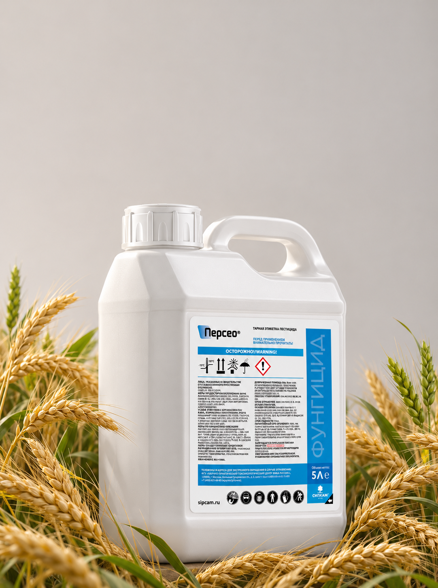
Остановите болезни до того, как они остановят урожай! Комбинация, не имеющая аналогов на рынке
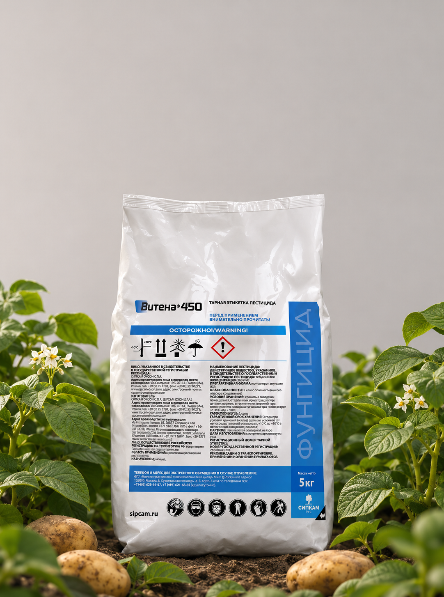
Лечебный эффект против фитофтороза. Фунгицид локально-системного действия для защиты картофеля
Действующие вещества внутри полимерной оболочки.
Постепенное высвобождение — прямо в почвенный слой.
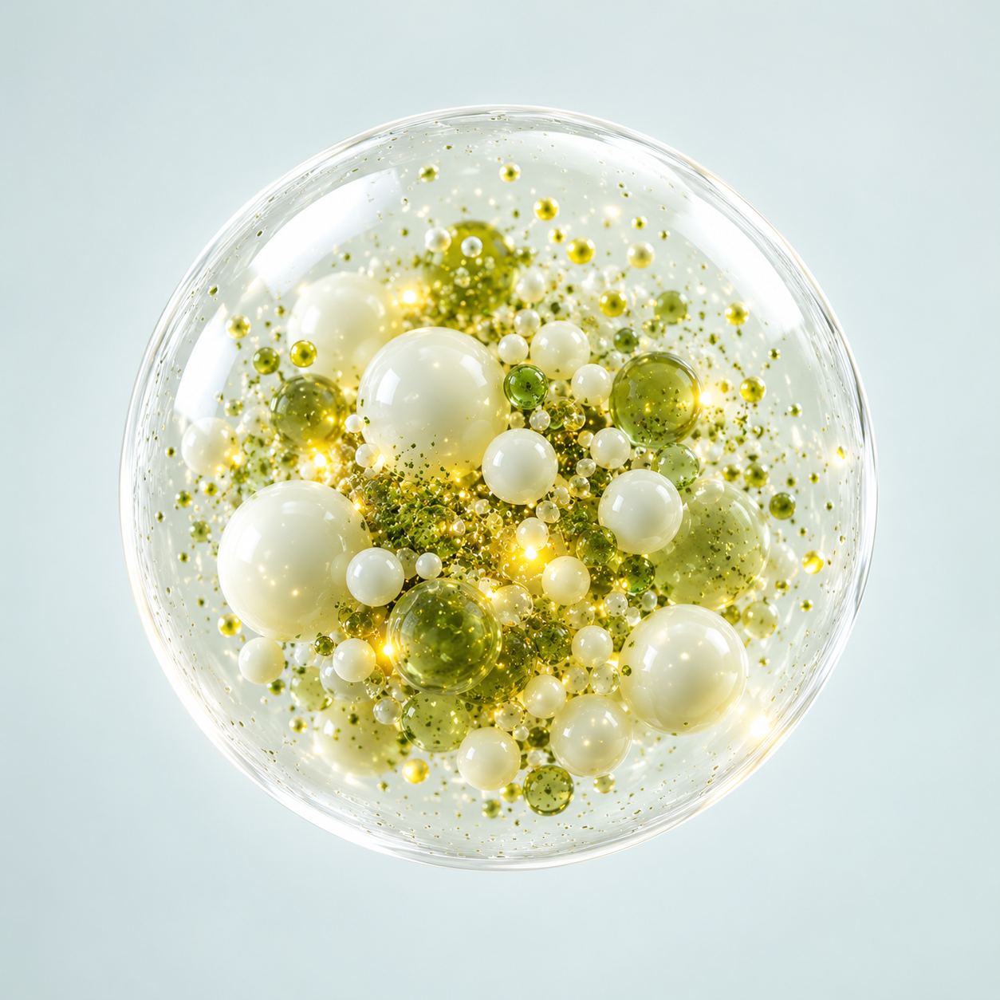
Более высокая биологическая эффективность по сравнению с классическими формуляциями.
Оболочка препятствует взаимодействию действующих веществ при приготовлении баковых смесей.
Защита от ультрафиолета, высоких температур и агрессивной среды раствора.
Исключение опасных растворителей из состава снижает токсичность для людей.
Высокая стойкость к сносам — капсула работает там, где нужна защита.
Стабильность и сохранность действующего вещества при хранении.
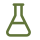
Собственный синтез и патентованные технологии формуляции
Решения, уважающие землю, людей и потребителей
Работаем бок о бок с фермерами уже более 80 лет
Независимая семейная компания с итальянским капиталом
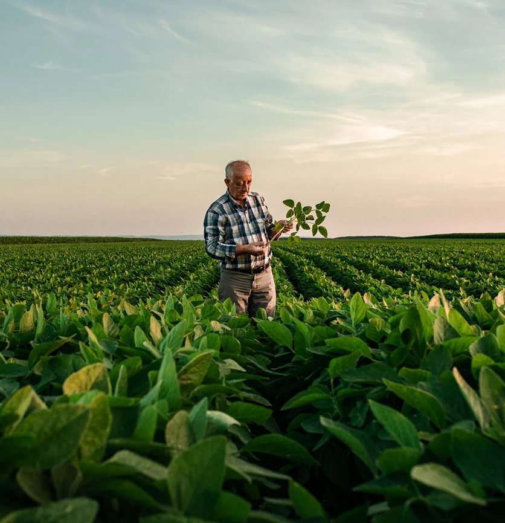
Основание SIPCAM в Милане — производство агрохимикатов
Основание OXON — собственный синтез действующих веществ
Международная экспансия: Европа, США, Австралия, Китай
Расширение портфеля: биостимуляторы и биорациональные препараты
Объединение SIPCAM и OXON в единую компанию
Выход на рынок России и СНГ под брендом СИПКАМ РУС
Осталось немного времени — и сельхозпроизводители Республики Беларусь смогут воспользоваться решениями СИПКАМ и оценить их уникальность